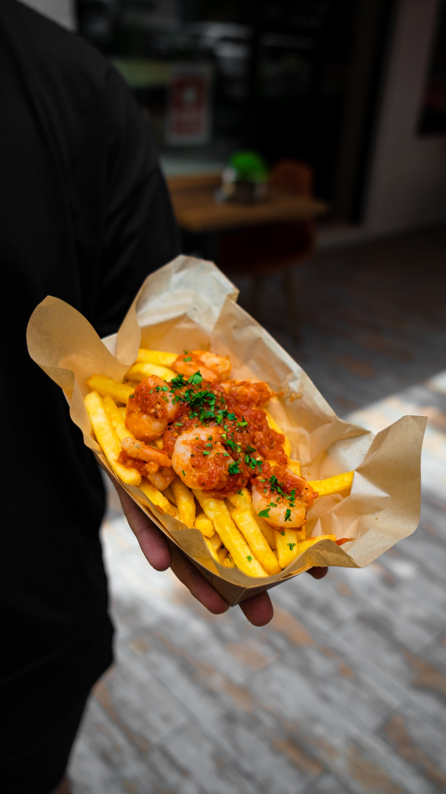

Ingredients
fish
• 1 pound cod, haddock, or other firm-fleshed white fish, cut into 1-inch pieces
• Salt and pepper to taste
• 1/4 cup all-purpose flour
• 1 tablespoon baking powder
• 1/2 teaspoon salt
• 1/4 cup milk
Chips
• 1/2 cup vegetable oil for frying
• 2 pounds russet potatoes, peeled and cut into 1/2-inch thick fries
• 1/2 cup vegetable oil for frying
• Salt to taste
2 cups egg noodles
Steps
1. Preheat the oven to 200 degrees F (93 degrees C). Line a baking sheet with paper towels.
2. In a shallow bowl, whisk together the flour, baking powder, and salt. In a separate bowl, whisk together the milk and egg.
3. Dredge the fish in the flour mixture, then dip in the milk mixture.
4. Heat the oil in a large skillet over medium-high heat. Fry the fish in batches until golden brown and cooked through, about 3 to 4 minutes per batch.
5. Transfer the fish to the prepared baking sheet and keep warm in the oven.
6. To make the chips, heat the oil in a large pot over medium-high heat. Fry the chips in batches until golden brown and crispy, about 5 to 7 minutes per batch.
7. Drain the chips on paper towels and sprinkle with salt.
8. To make the tartar sauce, whisk together all of the ingredients in a small bowl.
9. Serve the fish and chips with tartar sauce and malt vinegar.
Back to Home